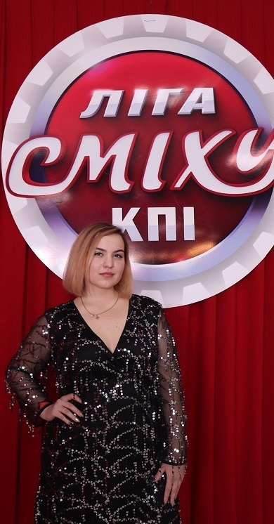
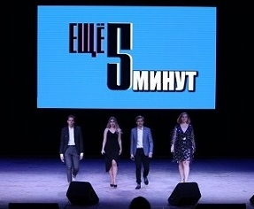
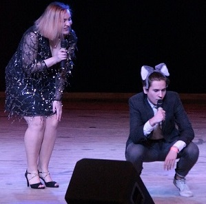
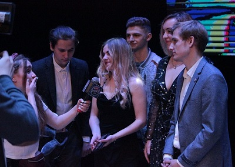

Команда "Ещё 5 минут" ворвалась в 3 сезон Лиги Смеха КПИ! Ждём всех на 1/4 финала



Мы - в полной боевой готовности!
Наш тренер - Инна Приходько - известная украинская актриса
Интересная информация о ней - по ссылке:
Инна Приходько
Будем очень рады видеть вас 19 марта в ЦКМ КПИ